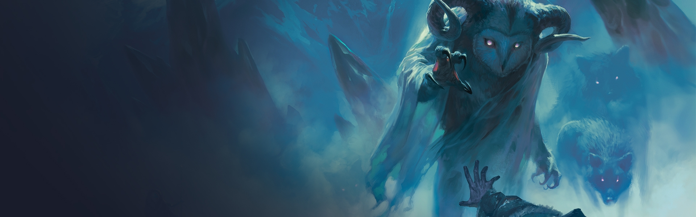

Aiden's Dungeons and Dragons Story
The story begins with four monsters and five 12 year old boys from the Carrol School. The boys are on the school campus playing soccer when the first green monster enters the game as a 20 foot tall striker. Aiden is goalkeeper as the green striker attacks the goal.